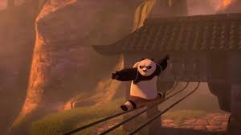
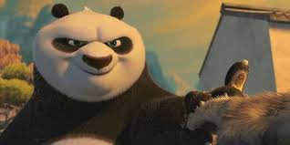
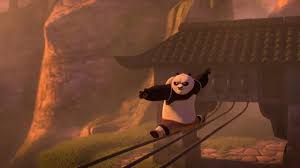
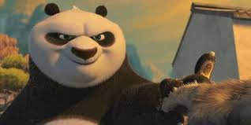

Спасение Долины Мира и всех её обитателей от безжалостного мастера Тай Лунга должно лечь на плечи Воина Дракона, первого среди лучших, коим становится… неуклюжий, ленивый и вечно голодный панда По. Ему предстоит долгий и трудный путь к вершинам мастерства кунг-фу бок о бок с легендарными воинами: Тигрицей, Обезьяной, Богомолом, Гадюкой и Журавлём. По постигнет тайну древнего Свитка и станет Воином Дракона только в том случае, если сможет поверить в себя…
Опубликованная работа над фильмом началась в октябре 2004 года, а проект был официально анонсирован в сентябре 2005 года.
Воин Кунг-Фу
древний Китай
 


